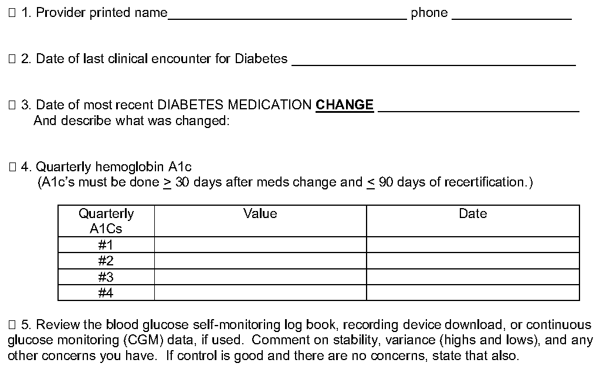
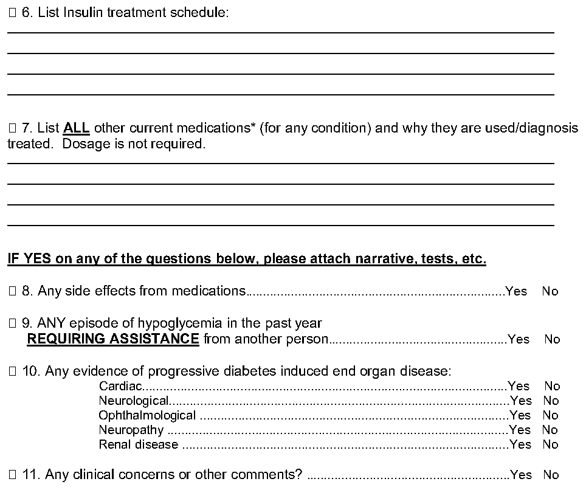

Protocol for Insulin-Treated Diabetes Mellitus Non-CGM - Third-Class Option
(Updated 07/27/2022)
Consideration will be given only to those individuals who have been clinically stable on their current treatment regimen for a period of 6 months or more. The FAA has an established policy that permits the special issuance medical certification to some insulin treated applicants. Individuals certificated under this policy will be required to provide medical documentation regarding their history of treatment, accidents, and current medical status. If certificated, they will be required to adhere to monitoring requirements. There are no restrictions regarding flight outside of the United States air space.
The following is a summary of the evaluation protocol and an outline of the conditions that the FAA will apply for third class applicants not using a CGM device.
A. INITIAL CERTIFICATION
- 1. The applicant must have had no recurrent (two or more) episodes of hypoglycemia in the past 5 years and none in the preceding 1 year which resulted in loss of consciousness, seizure, impaired cognitive function or requiring intervention by another party, or occurring without warning (hypoglycemia unawareness).
- 2. The applicant should provide copies of medical records as well as accident and incident records pertinent to their history of diabetes.
3. A report of a complete medical examination, preferably by a physician who specializes in the treatment of diabetes, will be required. The exam must be performed within the past 90 days.
THE INITIAL COMPREHENSIVE REPORT
, which outlines our requirements, is preferred, however, ANY report submitted MUST include, as a minimum:
- a. Two measurements of glycosylated hemoglobin (total A1 or A1C concentration and the laboratory reference range), separated by at least 90 days. The most recent measurement must be no more than 90 days old.
- b. Specific reference to the applicant’s insulin dosages and diet.
- c. Specific reference to the presence or absence of cerebrovascular, cardiovascular, or peripheral vascular disease or neuropathy.
- d. Confirmation by an eye specialist of the absence of clinically significant eye disease.
- e. Verification that the applicant has been educated in diabetes and its control and understands the actions that should be taken if complications, especially hypoglycemia, should arise. The examining physician must also verify that the applicant has the ability and willingness to properly monitor and manage his or her diabetes.
- f. If the applicant is age 40 or older, a report, with ECG tracings, of a maximal graded exercise stress test. g. The applicant shall submit a statement from his/her treating physician, AME, or other knowledgeable person attesting to the applicant's dexterity and ability to determine blood glucose levels using a recording glucometer.
NOTE: Student pilots may wish to ensure they are eligible for medical certification prior to beginning or resuming flight instruction or training. In order to serve as a pilot in command, you must have a valid medical certificate for the type of operation performed.
B. MONITORING AND ACTIONS REQUIRED DURING FLIGHT OPERATIONS To ensure safe flight, the insulin using diabetic airman must carry during flight a recording glucometer; adequate supplies to obtain blood samples; and an amount of rapidly absorbable glucose, in 10 gm portions, appropriate to the planned duration of the flight. The following actions shall be taken in connection with flight operations:
- 1. One-half hour prior to flight, the airman must measure the blood glucose concentration. If it is less than 100 mg/dl the individual must ingest an appropriate (not less than 10 gm) glucose snack and measure the glucose concentration one-half hour later. If the concentration is within 100 -- 300 mg/dl, flight operations may be undertaken. If less than 100, the process must be repeated; if over 300, the flight must be canceled.
- 2. One hour into the flight, at each successive hour of flight, and within one half hour prior to landing, the airman must measure their blood glucose concentration. If the concentration is less than 100 mg/dl, a 20-gm glucose snack shall be ingested. If the concentration is 100 -- 300 mg/dl, no action is required. If the concentration is greater than 300 mg/dl, the airman must land at the nearest suitable airport and may not resume flight until the glucose concentration can be maintained in the 100 -- 300 mg/dl range. In respect to determining blood glucose concentrations during flight, the airman must use judgment in deciding whether measuring concentrations or operational demands of the environment (e.g., adverse weather, etc.) should take priority. In cases where it is decided that operational demands take priority, the airman must ingest a10 gm glucose snack and measure his or her blood glucose level 1 hour later. If measurement is not practical at that time, the airman must ingest a 20 gm glucose snack and land at the nearest suitable airport so that a determination of the blood glucose concentration may be made. (Note: Insulin pumps are acceptable)
C. RECERTIFICATION
- 1. For documentation of diabetes management, the applicant will be required to carry and use a whole blood glucose measuring device with memory and must report to the FAA immediately any hypoglycemic incidents, any involvement in accidents that result in serious injury (whether or not related to hypoglycemia); and any evidence of loss of control of diabetes, change in treatment regimen, or significant diabetic complications. With any of these occurrences, the individual must cease flying until cleared by the FAA.
- 2. At 3-month intervals, the airman must be evaluated by the treating physician. This evaluation must include a general physical examination, review of the interval medical history, and the results of a test for glycosylated hemoglobin concentration. The physician must review the record of the airman's daily blood glucose measurements and comment on the results. The results of these quarterly evaluations must be accumulated and submitted annually unless there has been a change. (See No. 1 above - If there has been a change the individual must report the change(s) to the FAA and wait for an eligibility letter before resuming flight duties).
- 3. On an annual basis, the reports from the examining physician must include confirmation by an eye specialist of the absence of significant eye disease.
- 4. At the first examination after age 40 and at 5-year intervals, the report, with ECG tracings, of a maximal graded exercise stress test must be included in consideration of continued medical certification.
D. RE-CERTIFICATION STATUS REPORT NON-CGM – THIRD CLASS OPTION
See following pages.
DIABETES ON INSULIN Re-Certification STATUS REPORT
NON-CGM – THIRD CLASS OPTION
(Updated 06/29/2022)
Name __________________________________ Birthdate ________________________
Applicant ID# _____________________________ PI# ____________________________
Class applied _________________________ Circle one: INITIAL / Re-Certification
Please have the provider who treats your diabetes enter the information in the space below. Return the completed status report to your AME or to the FAA at:
Using regular mail (US postal service) | Using special mail (FedEx, UPS, etc.) |
|---|---|
Federal Aviation Administration Civil Aerospace Medical Institute, Bldg. 13 Aerospace Medical Certification Division, AAM-313 PO Box 25082 Oklahoma City, OK 73125-9914 | Federal Aviation Administration Medical Appeals Section, AAM-313 Aerospace Medical Certification Division 6700 S MacArthur Blvd., Building 13, Room 308 Oklahoma City, OK 73169 |

Text version of this diagram
1. Provider printed name________________________________ phone ________________ 2. Date of last clinical encounter for Diabetes ______________________________________ 3. Date of most recent DIABETES MEDICATION CHANGE ___________________________ And describe what was changed: 4. Quarterly hemoglobin A1c (A1c’s must be done > 30 days after meds change and < 90 days of recertification.)
Quarterly Value Date A1Cs #1 #2 #3 #4
5. Review the blood glucose self-monitoring log book, recording device download, or continuous glucose monitoring (CGM) data, if used. Comment on stability, variance (highs and lows), and any other concerns you have. If control is good and there are no concerns, state that also. _______
_________
________
________
DIABETES ON INSULIN Re-Certification STATUS REPORT
NON-CGM – THIRD CLASS OPTION
(Updated 11/07/2019)
Name __________________________________ Birthdate ________________________
Applicant ID# _____________________________ PI# ____________________________
In lieu of #6 and #7, the physician’s office may attach a current medication list. The list should note for what condition the medications are used.

Text version of this diagram
6. List Insulin treatment schedule:
7. List ALL other current medications* (for any condition) and why they are used/diagnosis treated. Dosage is not required.
IF YES on any of the questions below, please attach narrative, tests, etc. 8. Any side effects from medications..........................................................................Yes No 9. ANY episode of hypoglycemia in the past year REQUIRING ASSISTANCE from another person...................................................Yes No 10. Any evidence of progressive diabetes induced end organ disease: Cardiac........................................................................................................Yes No Neurological.................................................................................................Yes No Ophthalmological ........................................................................................Yes No Neuropathy .................................................................................................Yes No Renal disease .............................................................................................Yes No 11. Any clinical concerns or other comments? ..........................................................Yes No
____________________________ ___________________
Treating Provider Signature Date
For more information, see:
- • Acceptable Combinations of Diabetes Medications
- • Pharmaceuticals (Therapeutic Medications) - Diabetes Mellitus - Insulin Treated
Source: FAA Guide for Aviation Medical Examiners, PDF pages 568–572. Always check the official FAA version.